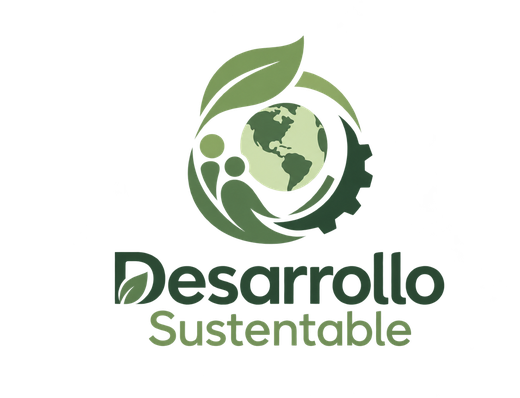

Material base
Contenido del curso

Introducción al Desarrollo Sustentable
Material del Tema 1: conceptos, antecedentes, enfoques, principios y dimensiones de la sustentabilidad.
TecNM FCP · Dr. Niels Henryk Aranda Cuevas
Abrir material del curso